📋 Общая информация
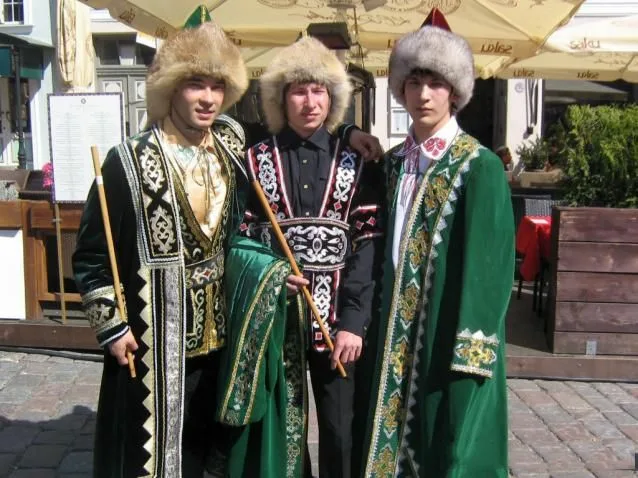
Численность
В России проживает около 1,5 миллионов башкир. Основное население Республики Башкортостан. Также проживают в Челябинской, Оренбургской, Свердловской областях.
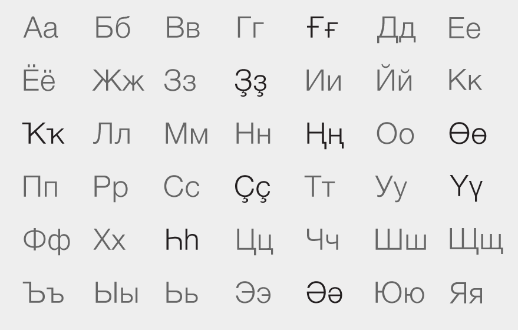
Язык
Башкирский язык относится к кыпчакской группе тюркских языков. Близок к татарскому, но имеет значительные отличия в фонетике и лексике. Использует кириллицу.
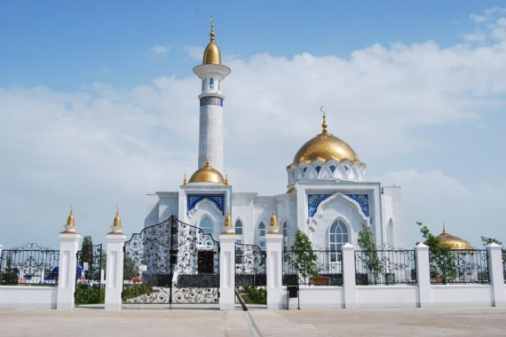
Религия
Ислам (суннитского толка). Принят в XVIII веке. Сохранились элементы доисламских верований: культ предков, почитание природы, священные деревья и родники.
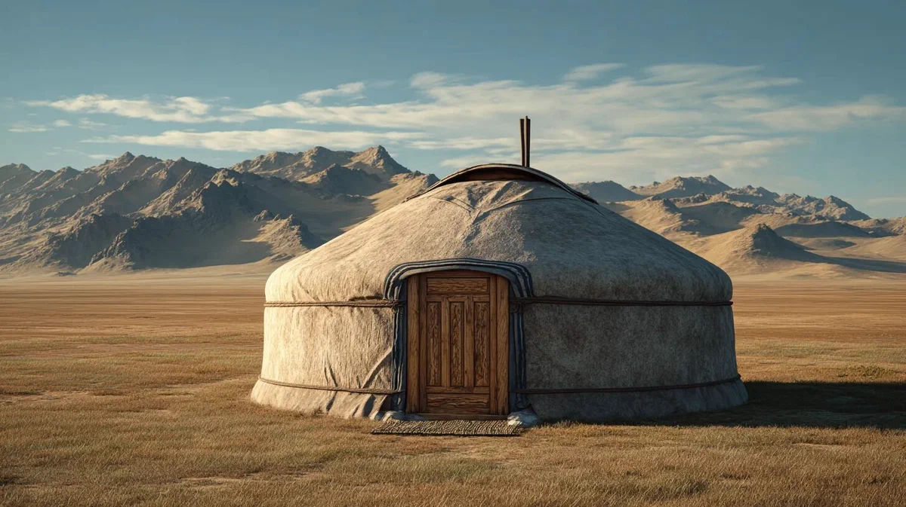
Расселение
Башкиры расселены по всему Южному Уралу и Поволжью. Крупные диаспоры в Казахстане, Узбекистане, Турции и Киргизии. Традиционно кочевое и полукочевое население.
🎭 Традиции и культура
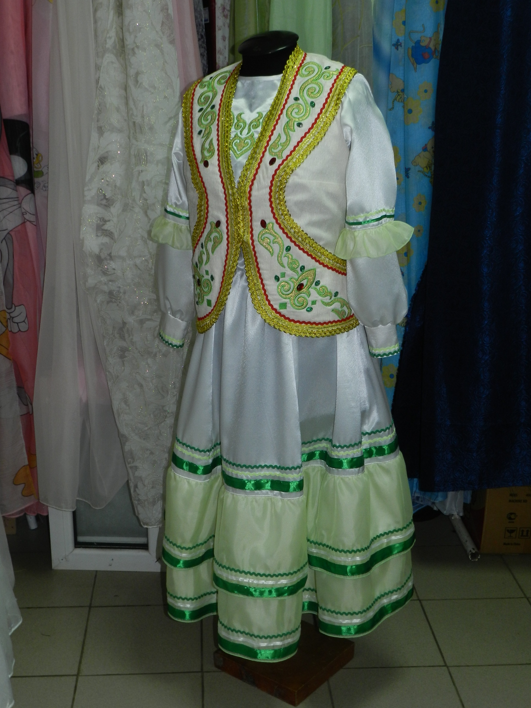
Национальный костюм
Женщины носили длинное платье «кузь донъя» с вышивкой, безрукавку «жәкет», головной убор «күмәкәй». Мужчины — рубаху «кәзәкәй», штаны «ысҡын», бешмет. Обязательный элемент — пояс «ҡушаҡ» с кисетом.
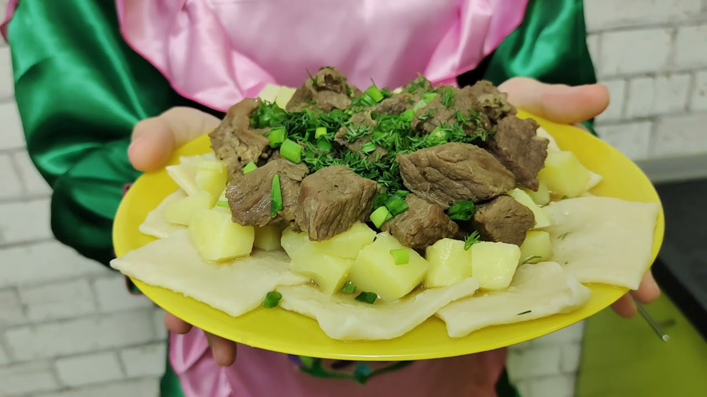
Кухня
Кумыс (кобылье молоко) — национальный напиток. Бишбармак (толстые лапши с мясом), чак-чак, кыстыбый, элеш. Мясо коня и барана в почёте. Мед — символ гостеприимства.
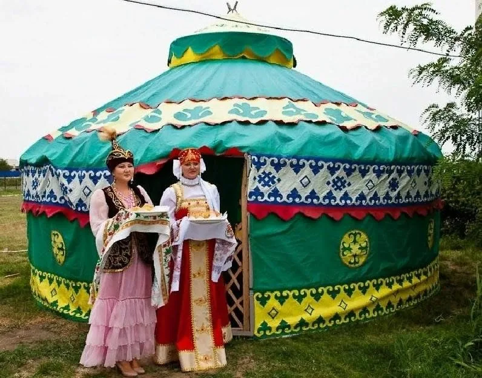
Жилище
Юрта — переносное жилище кочевников. Каркас из деревянных жердей, покрытые войлоком. Внутри — очаг, низкие сундуки, ковры и постельные принадлежности вдоль стен.
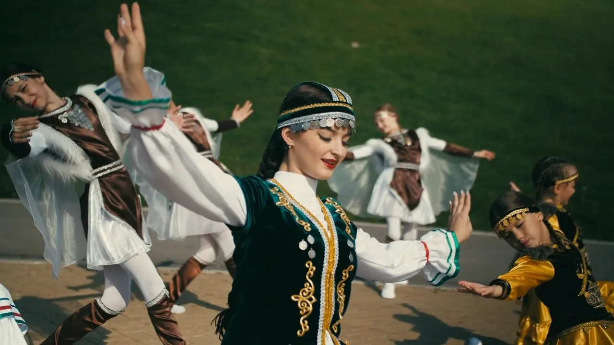
Музыка и танцы
Курай (флейта из ивового корня) — главный инструмент. Кубыз (скрипка), думбыра (щипковая). Танец «карсылау» — древний обрядовый танец встречи гостей.
🎉 Народные праздники
-
Сабантуй
Главный национальный праздник. Борьба куреш, скачки, стрельба из лука, поднятие камня, конкурсы национальной одежды. Проводится ежегодно с 1990-х годов.
-
Бал тыйын (Медовый Спас)
Праздник первого мёда. Освящение мёда в мечети, угощение гостей, ярмарки мёда. Символ плодородия и достатка.
-
Ураза-байрам и Курбан-байрам
Исламские праздники с башкирскими традициями. Праздничные намазы, угощения, посещение родных, помощь нуждающимся.
-
День Салавата Юлаева
17 июня. Национальный герой, борец за свободу башкирского народа. Парады, концерты, спортивные соревнования.
📸 Галерея
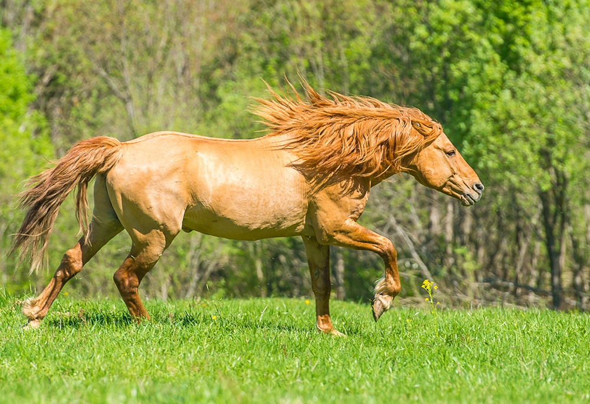
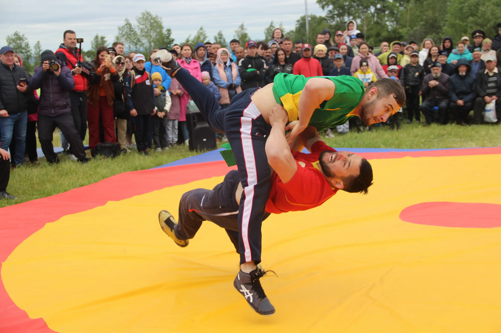
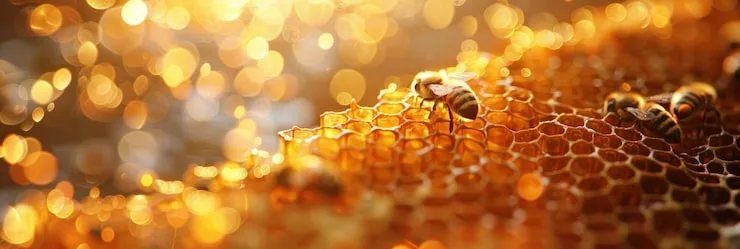
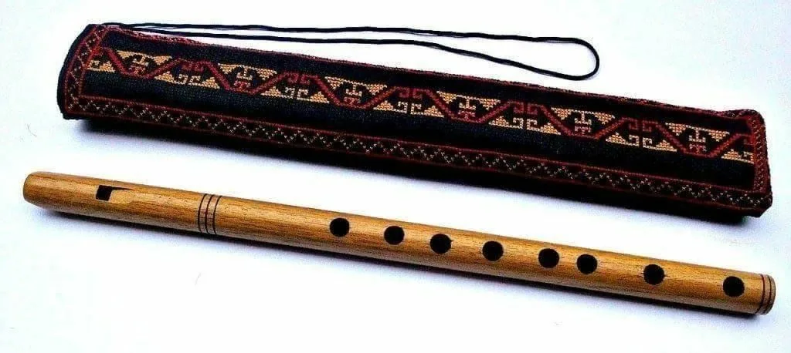
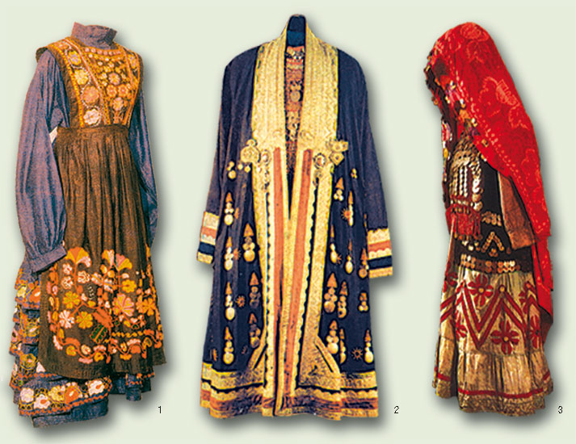
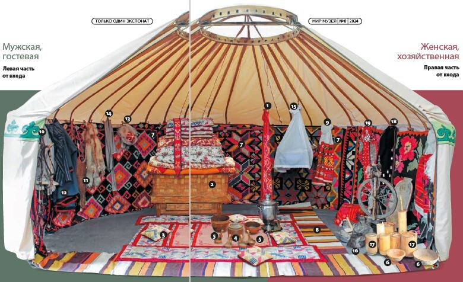
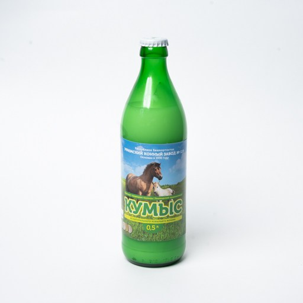
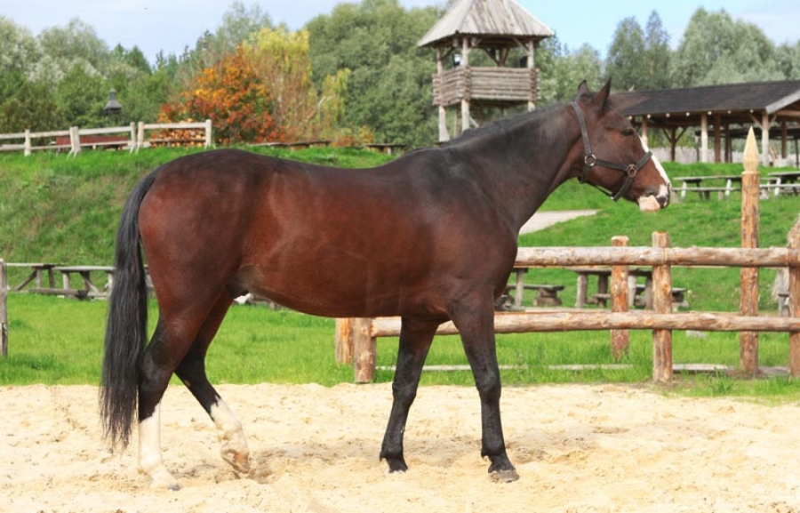
💡 Интересные факты
🐴 Башкирская лошадь
Уникальная порода, выведенная башкирами. Выносливая, неприхотливая, даёт кумыс (кобылье молоко). Считается одной из древнейших пород в мире.
🐝 Медная столица
Башкортостан — лидер по производству мёда в России. Башкирский мёд славится качеством и целебными свойствами.
⚔️ Салават Юлаев
Национальный герой, воевал против екатерининской политики. Памятник в Уфе — один из крупнейших конных памятников в мире.
🎯 Викторина: Насколько хорошо вы знаете башкирскую культуру?
Ответьте на вопросы на основе информации с этой страницы.